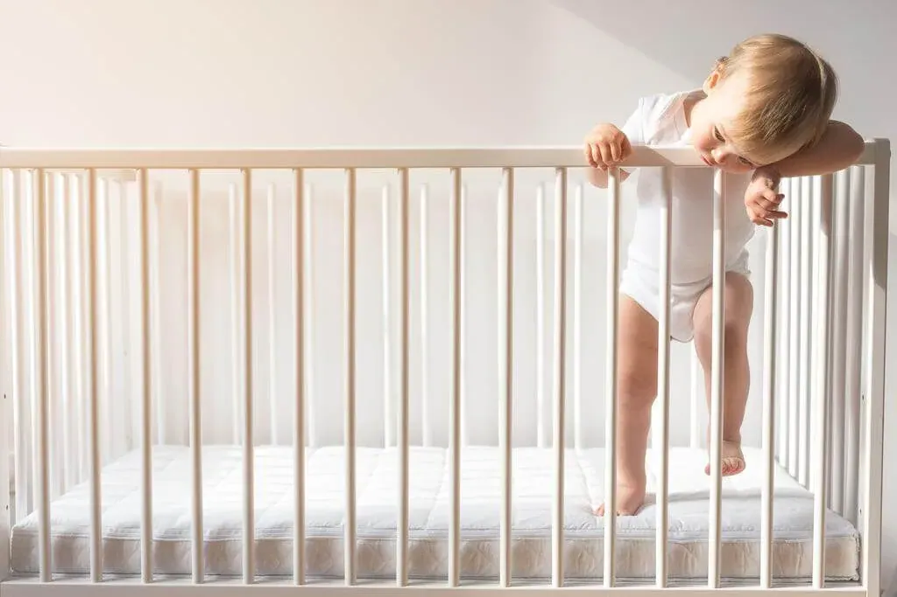

El paso de la cuna a la cama, ¿cuándo es el momento?

Este cambio responde a que se produce un avance evolutivo en el niño, necesita explorar el mundo y su psicomotricidad le permite trepar peligrosamente por los barrotes de la cuna, bajando cada vez que se le antoja. Además, como también habrá crecido en peso y altura, la cuna ya no es un lugar tan cómodo como lo era antes.
¿Cuándo es mejor pasar de la cuna a la cama?
Una reciente investigación publicada en la revista ‘Sleep Medicine’, ha demostrado que la edad ideal para hacer este cambio es en torno a los tres años. El estudio, comandado por la psicóloga Ariel Williamson, se llevó a cabo a través de una aplicación móvil que utilizaron una amplia muestra de cuidadores de diferentes nacionalidades. Los investigadores encontraron que cuando se retrasaba la edad elegida para pasar de la cuna a la cama, los niños mostraban menos resistencia a la hora de dormir, menos despertares nocturnos y los períodos de sueño eran más largos.
Del colecho a la cama.
Otros muchos niños, disfrutan del sueño en compañía de sus padres, es el llamado “colecho” en el que los miembros de la misma familia duermen todos en la misma cama, práctica que aporta innumerables beneficios para el descanso familiar.
En cuánto al paso de colechar a dormir solo en la cama, no hay datos concluyentes, aunque los expertos apelan al sentido común, entonces cuando el niño empieza a crecer y a moverse demasiado, a dar patadas y a interrumpir el sueño, conviene en ir pensando en cambiarlo a su propio dormitorio.
Transición de la cuna a la cama sin traumas.
Por norma general, el cambio se vive con expectación e ilusión a partes iguales, sobre todo por parte de los progenitores, aunque a los más pequeños puede generar cierta ansiedad. Por ello, no sería conveniente hacerlo coincidir con otros cambios que se producen a estas edades (como la retirada del pañal). Lo ideal es estar seguros de que estamos tomando la decisión en el momento correcto y una vez en ese punto, tomar en cuenta algunas recomendaciones lo hará más llevadero para toda la familia y que ayudarán a dormir mejor al niño.
Consejos para que la transición de la cuna a la cama sea más llevadera.
En anteriores investigaciones lideradas también por Williamson, se han destacado los beneficios crear una rutina de sueño para los niños, y es que, un entorno predecible calma la ansiedad de los niños. Además, podemos incorporar prácticas como leer cuentos, un rato de mimos, se trata de calmarle en definitiva.
La seguridad, aliada en la transición.
Los primeros días, puedes visitar la habitación en diferentes momentos, para comprobar que toda marcha en la buena dirección.
Por otro lado, colocar protecciones en la cama, y también es aconsejable en la puerta para que el niño no campe a sus anchas por la casa.
Y muy importante, retira de la habitación cualquier elemento que le permita trepar o que suponga un peligro.
Condiciones ambientales de la habitación infantil.
Una pequeña luz, puede calmar al niño si se despierta en mitad de la noche y se siente extraño o temeroso ante la oscuridad.
¿Te gusta elegir cómo debe ser tu dormitorio? Pues seguro que a tu hijo también le gusta participar en algunos detalles de su nuevo cuarto, por eso déjalo participar en la medida de lo posible en la decoración, que sea un lugar que lo sienta como propio y en el que se sienta totalmente cómodo.
Cómo debe ser una cama para niños.
– El colchón debe ser de firmeza media a la vez que adaptable y ambos, colchón y base, deben tener las mismas dimensiones de ancho y largo.
-La almohada no debe ser demasiado alta, para no forzar la pequeña curva cervical del niño.
-Utiliza siempre un cubre colchón, su uso en colchones para niños es imprescindible, porque garantiza la protección y durabilidad del colchón.